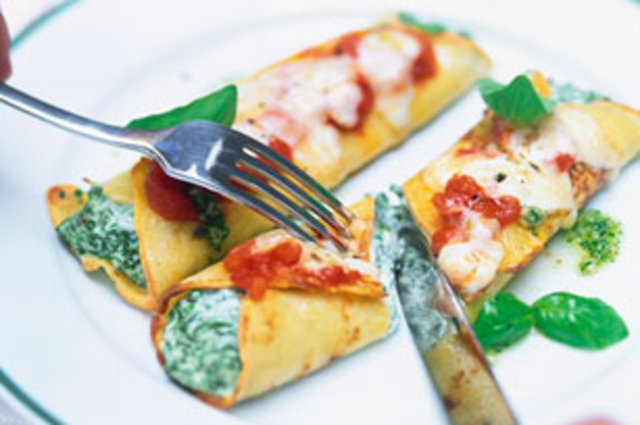

Receita de Junho:
Panqueca/crepe de espinafre assada

Ingredientes
Modo de Preparo
Informaçães Adicionais
- 1 ovo
- 300 g de espinafre picado
- 1 xícara de ricota
- 1 xícara de cream cheese
- 2 colheres de sopa de parmesão ralado
- 12 panquecas/crepes
- 1/2 xícara de molho de tomate
Modo de Preparo
- Aqueça o forno a 180 graus.
- Misture o ovo, espinafre, ricota, 1/2 xícara de queijo ralado e queijo parmesão.
- Coloque 2 colheres de sopa da mistura de espinafre no centro de cada crepe. Enrole e coloque em uma assadeira untada. cubra com molho de tomate e queijo ralado restante. Cubra a assadeira.
- Asse 35 minutos ou até aquecer, descobrindo nod últimos 5 minutos.
Informaçães Adicionais
- Tempo de preparo: 10 min.
- Tempo de cozimento: 40 min.